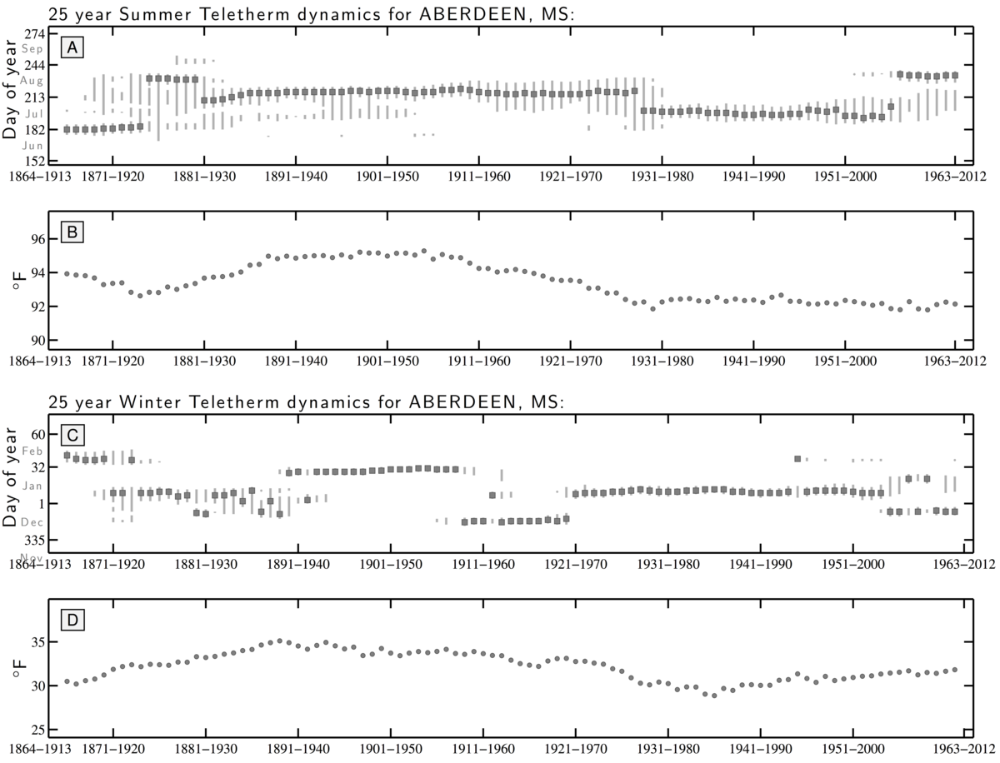
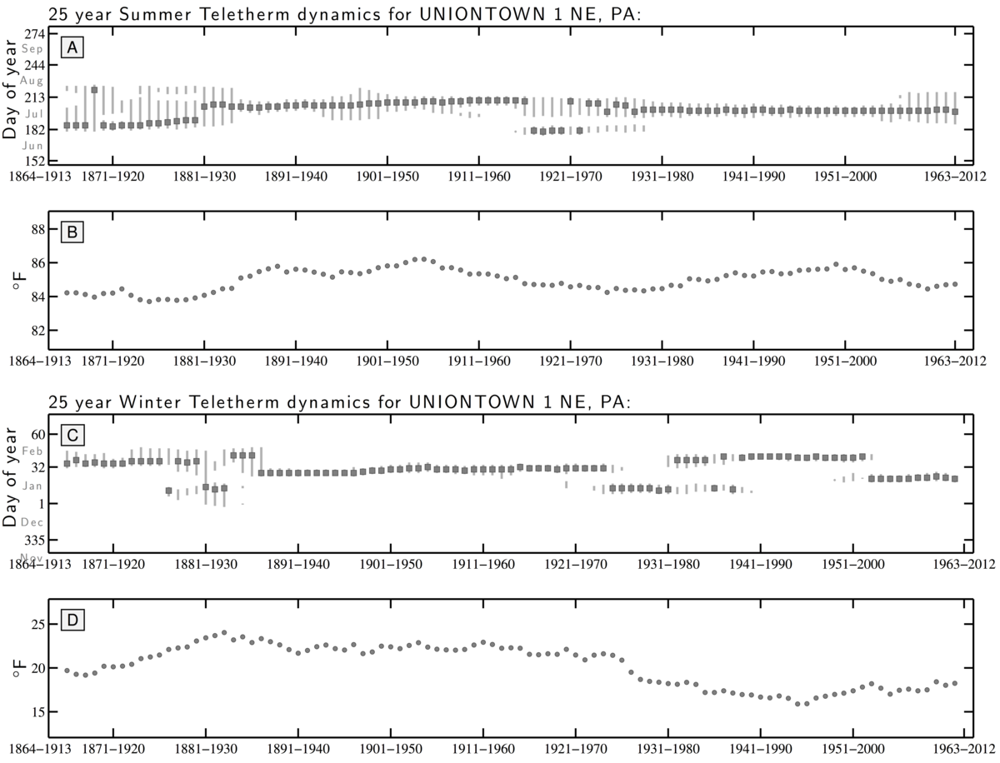
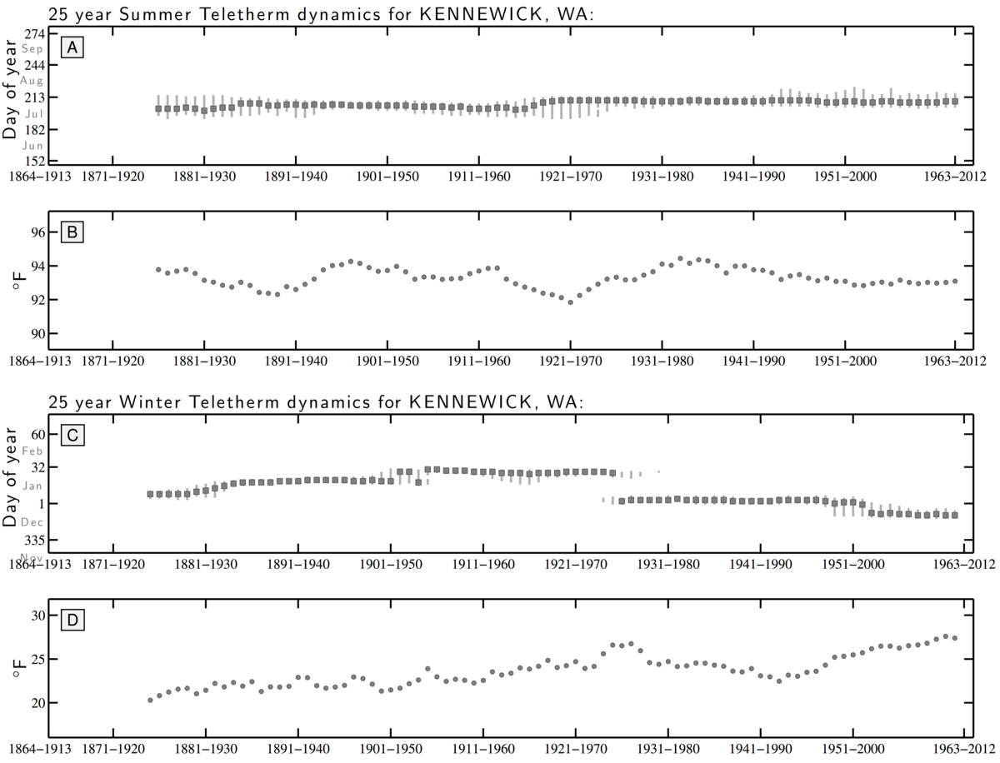

Oodles of station level plots of Teletherm dynamics and diagnostics:
Example 1/3: Stations in Mississippi typically show broad Teletherm extents, particularly in the summer. It gets hot and stays hot. For Aberdeen, we see a long Summer Teletherm Extent early on in the 1900s, a sharpening up over 50 years, and then an abrupt move to an earlier date at the end of the 1970s. Most recently, the Summer Teletherm has widened up again and the date has moved back to later in the year. From the 1950s, the Teletherm temperature fell and has remained constant from 1980 on. The Winter Teletherm has moved around considerably, holding steady for decades and showing a small Teletherm extent.
Example 2/3: The station Uniontown, Pennsylvania shows a kind of bifurcation we see in many areas for the Winter Teletherm. Often occurring in the 1970s and 1980s, a steady Winter Teletherm spilts into two periods, with the Teletherm itself switching between them. The Winter Teletherm has also cooled from 1950 on, with a slight rebound from 1990 to 2012. The Summer Telether shows an initially wide extent, then a clear Teletherm up until the mid 1960s when the Teletherm becomes spread out. By 1980, the Summer Teletherm has become locked in again though the extent has widened very recently.
Example 3/3: We also regularly see the Winter Teletherm abruptly moving to an earlier date in the year, often in the 1970s or 1980s. The station at Kennewcick, WA is a good representative. The Winter Teletherm's temperature for Kennewick has also risen gradually over 1913 to 2012, notably dropping somewhat after the shift in Teletherm date. Kennewick's Summer Teletherm has remained impressively stable in date, extent, and temperature.
